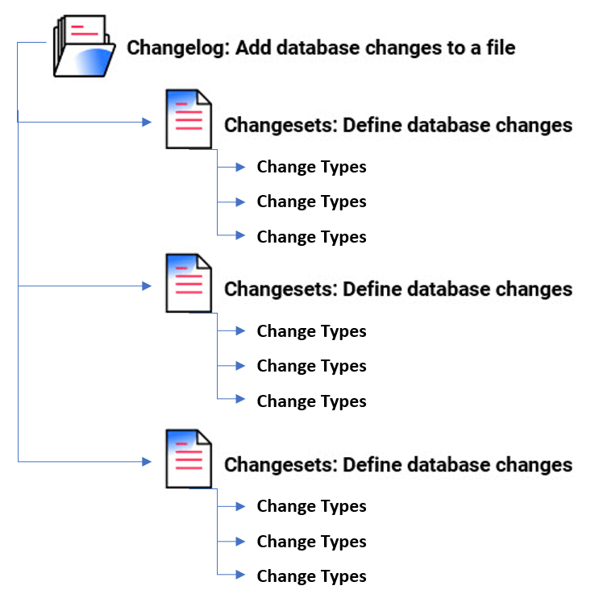

With
An individual unit of change in your
You can also
When you run the --changelog-file argument in your command line (CLI), your
To learn more about using

Your include or includeAll tags in your root
The following examples demonstrate the structure of a
Read more:
--liquibase formatted sql
--precondition-name precondition-attribute:value
--changeset author:id
changetype name (
changetype attributes
);
--other elementRead more:
<?xml version="1.0" encoding="UTF-8"?>
Read more:
databaseChangeLog:
- preCondition:
- preConditionName:
preConditionAttribute: value
- changeSet:
id: value
author: value
changes:
- changeTypeName:
changeTypeAttribute: value
nestedElementGroup:
- nestedElementName:
nestedElementAttribute: valueRead more:
{
"databaseChangeLog": [
{
"preCondition": [
{
"preConditionName": {
"preConditionAttribute": "value"
}
}
]
},
{
"changeSet": {
"id": "value",
"author": "value",
"changes": [
{
"changeTypeName": {
"changeTypeAttribute": "value",
"nestedElementGroup": [
{
"nestedElementName": {
"NestedElementAttribute": "value"
}
}
]
}
}
]
}
}
]
}For additional formats, see
When you run a database update, the
If all preconditions are met, include tags in the order they appear in the
Each id and author tags. The id tag, author tag, search path location, and name of the
The XML schema for the latest to match your current version of latest can be replaced with a specific version, like http://www.liquibase.org/xml/ns/dbchangelog/dbchangelog-4.12.xsd. Legacy XSDs are listed on the XML Format page.
The tables above only list